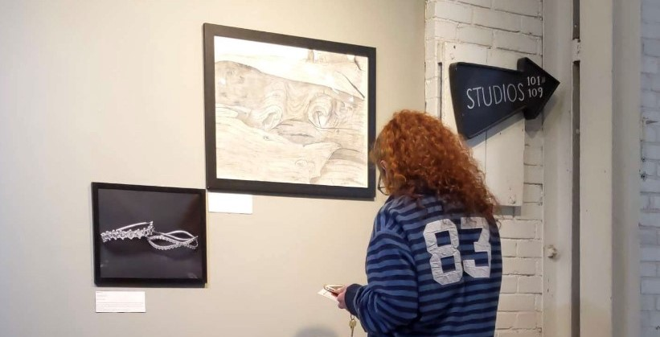
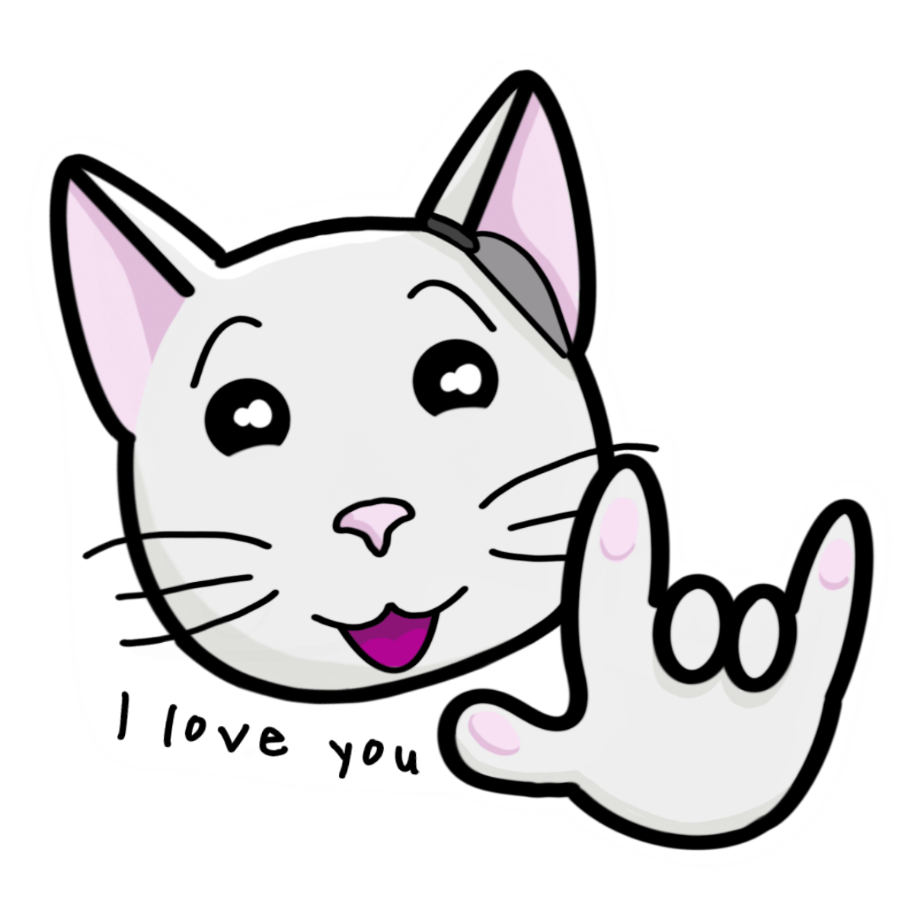
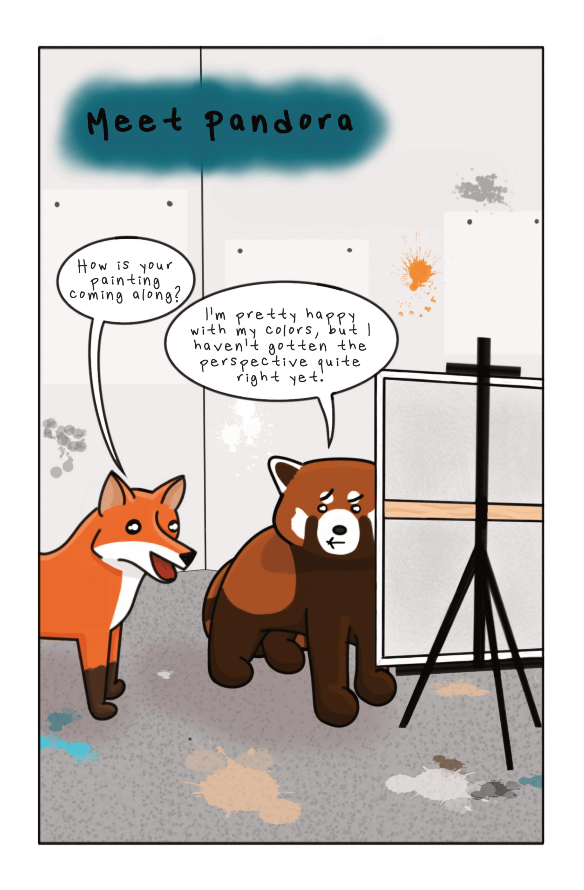
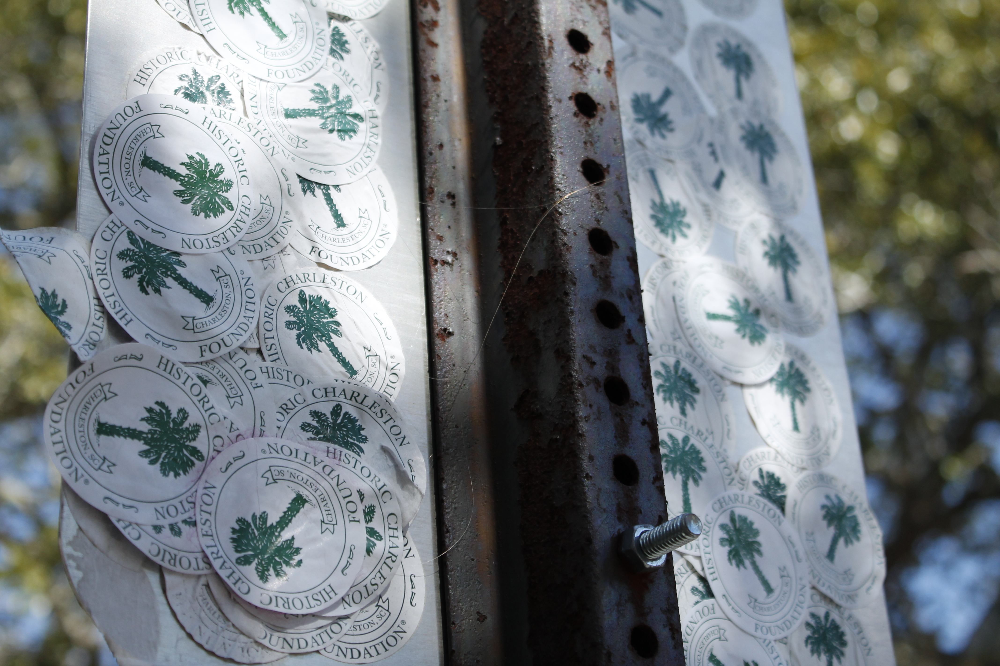

Zines, Gallery Shows, and Submissions, Oh, My!
An Early January 2022 Art Update
January 8th, 2022
It's only the first week of January 2022!
Yes, it IS only the first week of January 2022, but I have so many amazing updates to share with you! I made it a goal to start looking for more gallery shows, publications, you name it, that I could submit my work to in 2022. Thanks to my amazing professor, I started an opportunities spread sheet to keep track of all the events that were available for me to apply for. Well, I am happy to say that I am already starting off strong! Here is a list of the opportunities so far.
Gallery Shows
400 West Rich in Columbus, OH hosts "Franklinton Fridays" throughout the year and this upcoming one is
a gallery show called The Amazing Cat Show!. "The Amazing Cat Show is coming back this year during Franklinton Friday!
Cat Art from over 50 local artists will adorn our gallery walls. A portion of proceeds from each piece sold will benefit @catwelfareassoc & @sanctuary_night!"
Well, I submitted
my Catrina comic, from Love, Me: Volume One and it got in! Not only that, but all three of my Love, Me comic books will be sold at the event in order to raise some
money for those wonderful organizations.

I just received confirmation that my animation "A Laney Day" will be featured in an online gallery show hosted by Urban Arts Space!
The show is called "Unitus" and it is about "Buckeyes who have made artwork during
the pandemic or in response to their experiences throughout. As the nature of the pandemic continues shifting, we urge students to ponder and respond to these questions: What did you learn throughout
this experience? What brought you comfort? What were your fears? What did you make?"
I will update my social media with the link when it is live in February, so keep an eye out for that!
Online Publications
Two of my works, A Laney Winter and my Pandora comic from Love, Me: Volume Two are featured in the zine, "Strictly: The Frosted Edition". "Strictly Magazine is a platform made for artists, by artists. A place to talk about your art the way you see fit! This edition was all about the winter and rejuvination. That is why I chose the two projects that I did. If you are interested, the magaizne is online and only $7. The money does not go to me, so if you are interested in supporting me and my work, please visit my shop. 
Submissions Waiting To Hear Back
I know that sharing this is probably jinxing myself, but I am excited and proud to know that I was able to apply to these places. Two places I am excited to hear back on are a space in a gallery
show in London, UK and a spot in a (going to be published) photography book!!
The gallery in London is called Warbling and the gallery show is titled "A Plot, Hatched By Two". If any of my submitted work gets selected, I will hear back
next week AND it will be announced on their instagram. It would be a huge deal if my work were to go to London, even if it is a small, artist-run gallery.
The photography book is published by BOOOOOOOM. (Yes, that is the official title.) The theme of the book is "Circles". When I saw the open call, I knew immediately
that I had to share some of my favorite photography work that I took in Charleston, South Carolina. I think it is understandable why I am excited to have work featured in a published book that wasn't self-published.

More submissions are coming up, but these are the two I am most excited about! Be sure to check them out and let me know what you think of them.
Want More?
Make sure to follow me on Instagram or Facebook for the latest infromation!